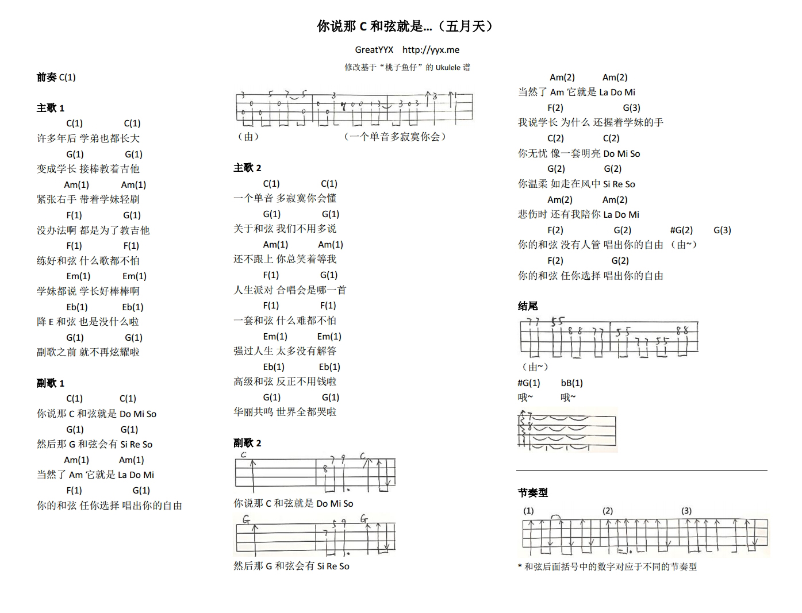

五月天《你说那C和弦就是...》Ukulele谱
写在前面
1年多没写博了，不知道是因为太忙了太懒了还是因为太无所事事了。
9月底龙童鞋回国，把曾经带给她好心情的Ukulele转送给我保管。由于开学初事情多，直到最近几天才翻出来耍耍。记得上次（也是初次）玩小U还是留学前去深圳看叽歪的时候，那时候2欣家有一把Ukulele用来当装饰品……这一晃就2年多了。
最近听五月天的新专《自传》，感觉依然是熟悉的配方熟悉的味道（就比如《终于结束的起点》听出了《仓颉》的感觉）。《你说那C和弦就是...》比较简单上口，内容上有点《T1213121》的感觉，“四大和弦一套指法弹吉他”，和弦进行也是非常模式化的1564。
谱子
当时就是随便搜了个谱子，后来发现是“鱼仔”家的，原来玩Uku的时候用过这个小伙子的谱子，感觉挺好的，于是就拿来瞎弹了一会。不过感觉谱子还是太单一，于是就稍微改编了下。

非和弦的地方直接在纸上画了然后扫到电脑里的（没Ukulele的制谱软件），节奏型总共3个，和弦后面括号里的数字标注了相对应的节奏型。
comments powered by Disqus